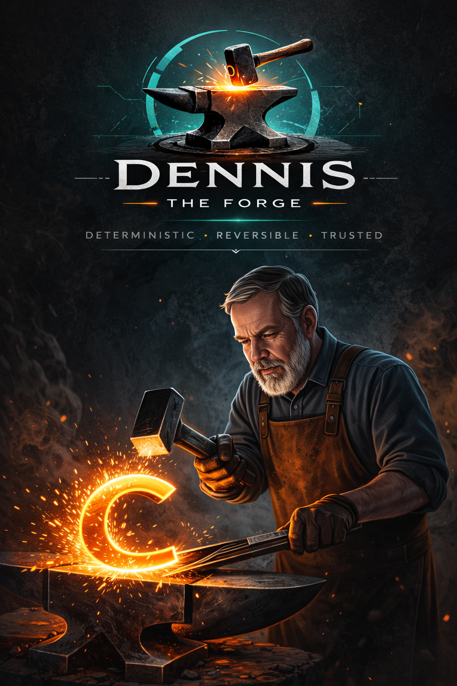

The Forge Academic Program
We believe the future of software engineering should be reproducible, inspectable and teachable.
Dennis Forge provides free and discounted access for students, educators and research institutions who want to explore deterministic software transformation in the classroom, laboratory or their own projects.
Explore Academic Access
Why an Academic Program?
Some of the most important ideas in software engineering deserve to be learned by building with them.
Learn by making changes you can prove
Dennis is built around a simple idea: a software change should be something people can inspect and understand before it is applied.
Instead of treating transformations as opaque operations, Dennis generates human-readable plans describing what will change. Those plans can be reviewed, shared, packaged and verified before execution.
This makes Dennis useful not only as a development tool, but also as a way to teach reproducibility, software transformation, provenance and careful engineering.
Who Can Participate?
The Academic Program is intended for people using Dennis for learning, teaching or research.
Students
Students learning software engineering, programming, refactoring, automation or related disciplines can use the Academic Program to experiment with Dennis and deterministic transformations.
Educators
Teachers and instructors can introduce Dennis into courses, workshops and practical exercises where students need to understand how software changes are planned, reviewed and applied.
Research Institutions
Research groups and academic institutions can use Dennis when reproducibility, traceability and inspectable transformations are relevant to their work.
What Can You Explore?
Dennis provides a practical environment for studying ideas that normally remain hidden inside development tooling.
Software Transformation
Explore how large numbers of source changes can be represented as explicit, deterministic transformations.
Human-Readable Plans
Study the difference between deciding what should change and actually executing that change.
Verification
Examine how deterministic diffs and verification can turn software changes into evidence that can be checked and reproduced.
Provenance & Lineage
Explore how transformation artifacts can preserve where a change came from and how it evolved.
DEX Artifacts
Learn how deterministic transformation plans can be packaged into portable artifacts that can be inspected, shared and verified.
Reproducible Engineering
Use Git-native workflows to investigate how the same input can produce stable and verifiable results.
Start with the CLI
The Academic Program builds on the same principle as the rest of Dennis Forge: the core tool should remain available and usable without depending on the hosted service.
Students and researchers can therefore begin experimenting locally and use the Forge platform when hosted collaboration or additional services are useful.
Academic Access
We want the economics of learning and research to be a smaller barrier than the cost of experimentation.
Free and Discounted Plans
Eligible students, educators and research institutions can receive free or discounted Dennis Forge plans, depending on their academic use.
The goal is simple: if you are using Dennis to learn, teach or investigate software engineering, we want to make it practical for you to do so.
Academic access is intended for genuine educational and research use. Commercial use belongs under the regular Forge plans.
Build. Inspect. Understand.
The Academic Program is not about giving students a simplified version of Dennis. It is about giving them access to the real ideas behind it.
Software engineering becomes much easier to reason about when the transformation itself is visible.
A plan can be read. A DEX artifact can be inspected. A signature can be verified. A diff can be reproduced.
These are not merely product features. They are ideas worth understanding.
We want students to leave the Forge knowing not only how to change software, but how to know what changed.
Ready to Explore?
Start with the free Dennis CLI, explore the documentation, or contact us about Academic Program access.